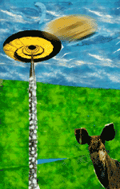

 |
| Quién
de nosotros no habrá contestado nunca a la pregunta de:"qué
hacemos, ¿ nos vamos ?‘, con un "nos vamos";quién
no habrá asentido, impertérrito y con barba de tres días
a las redundancias cotidianas que nos rodean; legañoso y rosmón ante la incómoda luz de la realidad; majareta y desdeñoso frente a las impertinencias del día a día, diosmío día... La esencia substantiva del estoico es la rebelión libertaria e instintiva del ser fiente a la autoridad divina, es decir, la completa potenciación del yo más caradura ante el díscurrir de lo natural y el buensentío. Si partimos de ello cómo no reconocer en la fragancia que la obra de Ibrahim respira, el aroma alpino de la elevación espiritual más teleférica. Todos somos un poco Ibrahims; todos ponemos en algún momento de nuestras vidas el cuerpo al servicio de nuestros cerebros y todos, sin excepción, bebemos de las mieles del triunfo y paladeamos la savia amarga de la derrota con la misma cara gilipollas......... |